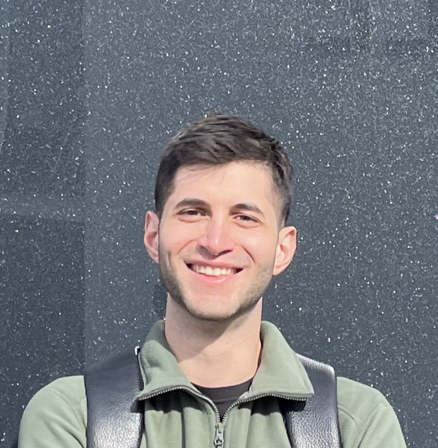

Ioannis Grigoriadis

Profile
Motivated and enthusiastic.
A well-organized, visionary, and fastidious individual,
with a passion for technology and the digital world.
I have a strong desire to contribute
to society through my work and believe that practice
and working experience are key to professional growth.
I am cooperative team player who is versatile and eager
to pick up new abilities.
Education
- Applied Informatics - University of Macedonia
Undergraduate – last semester
Work Experience
- Interalpen-Hotel Tyrol - Bar Staff
11/2021 – 02/2023
Telfs, Austria
- Advising guests on the choice of drinks
- Serving drinks and snacks
- Preparation of cocktails and drinks according to the recipe
- Taking care of aperitifs
- Build up the bar stock
- Rockabilly - Head Bartender
06/2019 – 11/2021
Katerini, Greece
- Planning the weekly working schedule
- Bar managment
- Creating new signature cocktails
- Interviewing candidates for bartenders
- Training new bar staff
Skills
-
University gained
MySQL, Databases, Computer Science, Information Security,
Computer Networking, Sustainable Development,
Algorithm Analysis, Java, C, SEO, Human-Computer Interaction,
Digital Marketing, Macroeconomics: Basic/Beginner level
-
Self-Taught
Computer Components: Excellent knowledge
Operation Systems: Windows, Mac OS (Excellent), Linux (Basic)
Microsoft Office: Intermediate knowledge
Photoshop: Intermediate knowledge
Ableton Live: Beginner
Languages
- Greek: Native
- English: Professional working proficiency
- German: Elementary
Other